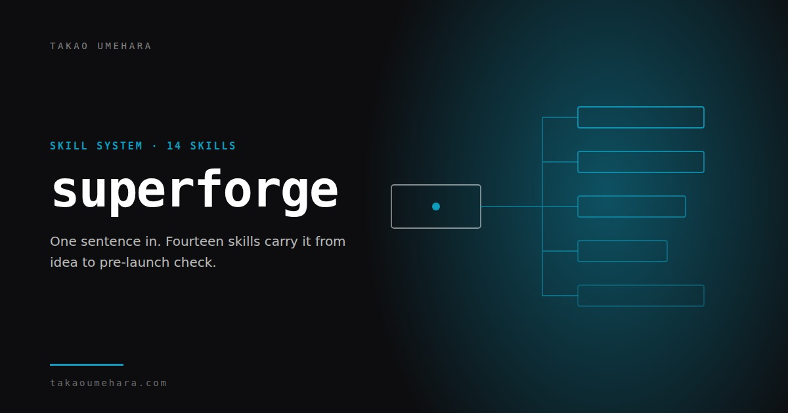
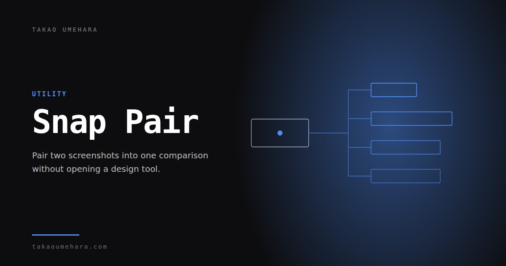
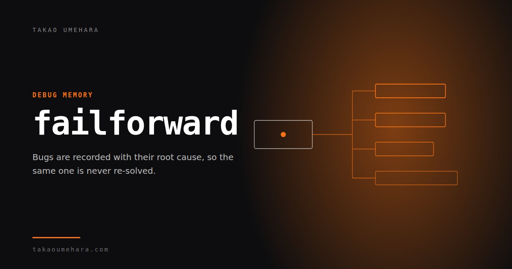

Designing the interface. Building the system behind it.
Takao Umehara is a product designer and builder working across interactive experiences, AI products, tools, product design, and brand.
Explore selected work01 / 05
Interactive Experience
Voice, movement, handwriting, and multiple phones become the input. The output is an experience larger than the screen in your hand.
Resona 響
Pseudo-haptics: animation that makes you feel mass and friction through a screen that has neither.
Open projectRakugaki Jam
Doodle on your phone, fling it onto the shared wall. A crowd-drawn VJ jam that needs no app install.
Open project
Marubatsu 2.0
A real-time 4×4 tic-tac-toe game with pass-and-play, online pairing, and a Gemini-powered opponent.
View case study02 / 05
AI Products
AI is part of the product logic, not a label added to the interface. The person stays able to understand and direct the system.


03 / 05
AI Tools
Open-source systems that came out of building the work: repeatable process, multi-device infrastructure, and a memory for failures.

superforge
Fourteen specialist skills that route a build from one sentence through implementation, accessibility, and pre-launch checks.
View project
Snap Pair
A React and Firebase pairing layer that lets every phone in the room join an app in one scan.
View project
failforward
A zero-dependency CLI that records failures and recalls the useful lessons before similar work starts.
View project04 / 05
Product Design
Enterprise platforms, service ecosystems, and learning products shaped from information architecture through shipped interface.

Verizon Total Wireless
A shopping-flow redesign that made pricing, compatibility, and e-commerce decisions easier to understand.
View case study
CLI Studios
A mobile UX overhaul that began with information architecture and became a unified design system.
View case study
T-Mobile BOPIS
An integrated buy-online, pick-up-in-store experience spanning customer app, kiosk, staff tools, and voice.
View case study05 / 05
Brand Experience
Identity systems built to survive campaigns, physical spaces, products, and the people who have to use them.

Coca-Cola
Two global visual campaign worlds designed to flex across markets, formats, and cultural contexts.
View case study
Value Frontier
A strategic rebrand from sustainability consultancy to a premium, multi-industry identity system.
View case study
Akimatsuri Festival Design
Original games, branding, and volunteer systems designed as one coherent Japanese school-festival experience.
View case studyAbout
Strategy in the room. Craft in the file.
Takao Umehara is a product designer, innovation strategist, and creative thinker based in New York City. His work combines strategic vision with hands-on design and prototyping.
He started in Tokyo and has spent the last twenty years in New York, designing products and experiences for organizations including Amplify, T-Mobile, Verizon, Coca-Cola, and XQ.
Connect on LinkedIn (opens in a new tab)